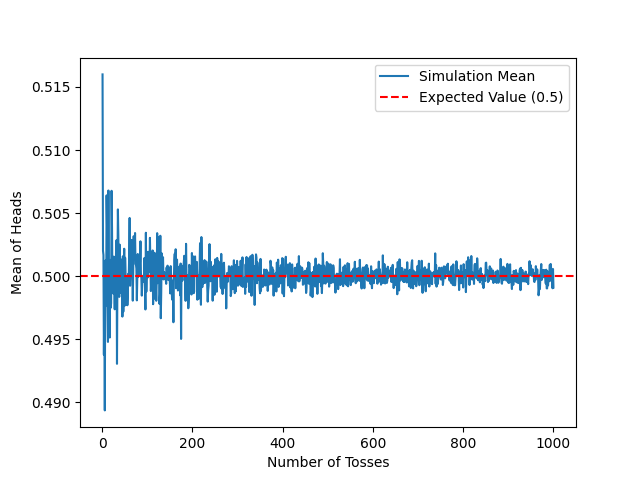

Introduction
The term "LLN" stands for the "Law of Large Numbers", a foundational concept in statistics and probability. The LLN posits that, as the size of a sample increases, the average of observed values converges to the expected value of the random variable. This principle underscores the critical role of sample size in enhancing the accuracy and reliability of statistical estimates.
Proof of the LLN::
The proof of the LLN relies on probability theory and the concept of convergence in probability. It establishes that, with high probability, the average of a large sample progressively approaches the expected value of the random variable. This result holds significant implications across various disciplines, from finance to data science, providing a theoretical underpinning for the dependability of estimates and predictions.
Simulations to Illustrate the LLN:
Simulations serve as a valuable tool for illustrating the LLN. By leveraging computer programs, one can generate numerous random samples of increasing sizes and calculate the corresponding averages. These visual simulations facilitate a better understanding of how the law manifests in real-world scenarios and how random fluctuations diminish as the sample size expands.
Conclusion:
In summary, the LLN is a fundamental principle in statistical analysis, validated through probability theory and reinforced by simulations. Its comprehension is crucial for ensuring the validity of conclusions drawn from data samples and for guiding decisions based on statistical estimates. The following Python script provides a practical demonstration of the LLN through a coin-toss simulation, showcasing how the mean converges to the expected value with an increasing number of trials.
